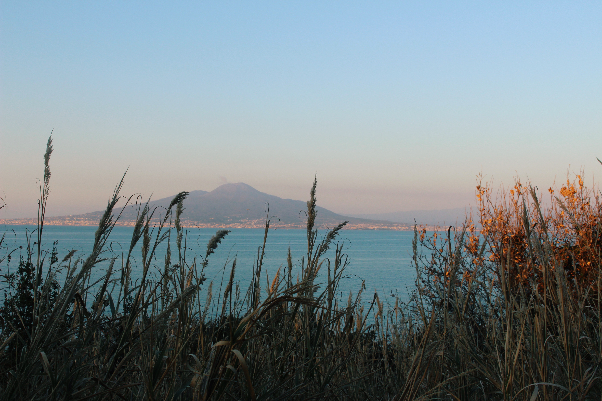

Great white pelicans found in the Daintree Rainforest, located to the
northeastern coast of Queensland, Australia.

The Baths of Sorrento, Italy. The mountain in the distance is Mount Vesuvius.
The Arc de Triomphe in Paris, France, found on the western side of the
Champs-Elysees.
Study abroad program dates:
Summer in Italy: May 19 - June 30
Summer in France: May 19 - July 2
Spring in England: January 27 - March 18
Spring in Australia: January 24 - March 23
Our next information session is this Friday (October 1) at 4:30pm in the Student Program Center,
room 1042. Talk to a panel of advisors and former study abroad students, as well as meet potential study
abroad peers. Come if you have any
questions!
Once accepted into a study abroad program, billing will be processed through the same portal as tuition.
Visit the information page of each program for more information on travel and tuition expenses.